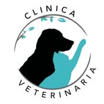

Clínica Veterinaria • Barrio Viv Productivas · San Luis

Clínica Elixir Vet — Clínica veterinaria profesional dedicada al cuidado y bienestar de tus mascotas. Consultas, cirugías, vacunación y seguimiento personalizado. Barrio Viv Productivas, San Luis.
Atención veterinaria completa, profesional y con el amor que tus mascotas merecen. Cada consulta, con dedicación real.
Diagnóstico clínico completo para perros, gatos y otras mascotas. Evaluamos el estado de salud general, detectamos problemas a tiempo y diseñamos el plan de cuidado ideal para tu compañero.
Plan de vacunación completo y desparasitación interna y externa. Protegemos a tu mascota con los protocolos correctos según su edad, especie y estilo de vida.
Intervenciones quirúrgicas con equipamiento adecuado y seguimiento postoperatorio. Desde castraciones y esterilizaciones hasta procedimientos de mayor complejidad.
Cuidado especializado para los más pequeños desde sus primeros días. Controles de crecimiento, primer esquema de vacunación y asesoramiento para una crianza saludable.
Atención de urgencias para cuando tu mascota más te necesita. Consultas de emergencia con la rapidez y el cuidado que cada situación requiere.
Reservá tu turno fácil y rápido por WhatsApp. Seguimiento de cada paciente para que su historial esté siempre disponible y la atención sea cada vez más precisa.
En Clínica Elixir Vet entendemos que tus mascotas son parte de la familia. Por eso cada consulta se trata con la seriedad, la ternura y el profesionalismo que ellos merecen.
Escribinos por WhatsApp o completá el formulario y te contactamos para coordinar la consulta de tu mascota.
2664 893 646
B° Viv Productivas · Mza 84, Casa 15 · San Luis
@clinicaelixirvet